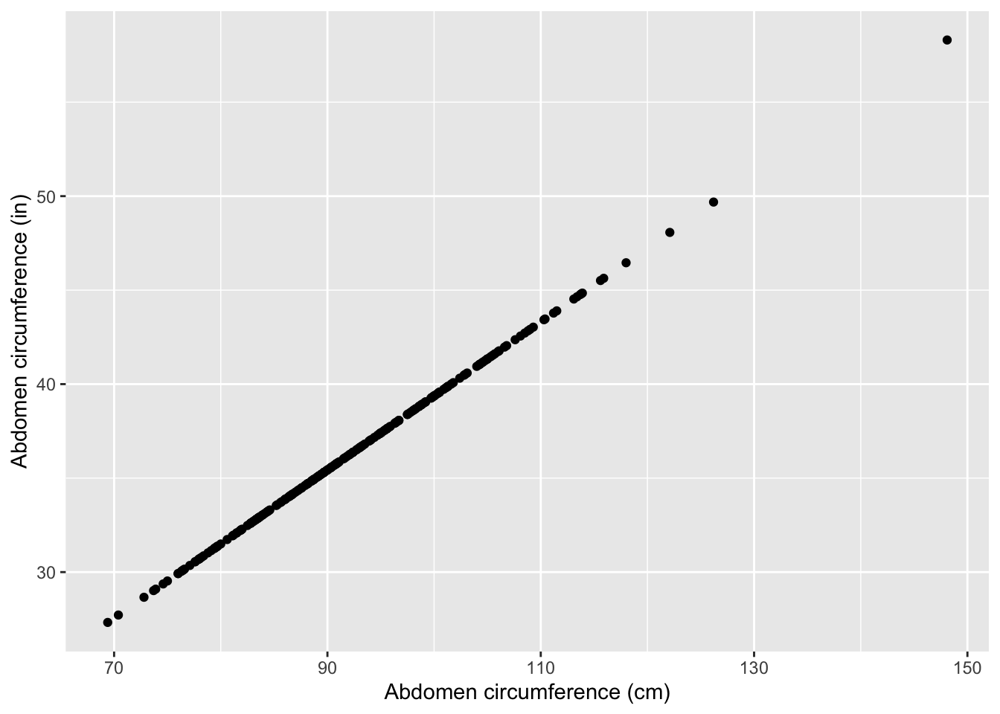
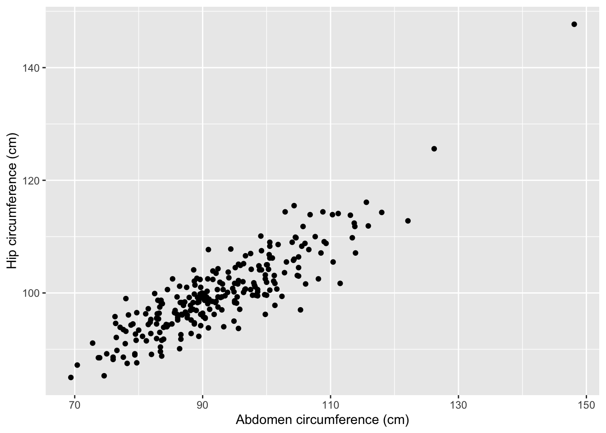

Topic 9 Redundancy, Multicollinearity, and Adjusted R-squared
Learning Goals
- Explain when variables are redundant or multicollinear
- Relate redundancy and multicollinearity to coefficient estimates and \(R^2\)
- Explain why adjusted \(R^2\) is preferable to multiple \(R^2\) when comparing models with different numbers of predictors
Discussion
A reminder of why we care about all of this…
By the end of the flight, he had made several requests, initiated several times, & his behaviors had reduced quite a bit. The father was astounded – clearly no one had ever tried an AAC approach with him. I gave him the paper & showed him how to use it, and he nearly cried. 6/
— Rachel R. Romeo (@RachelRRomeo) August 28, 2019
Why are multiple regression models so useful?
Adding predictors to models…
- Predictive viewpoint: Helps us better predict the response
- Descriptive viewpoint: Helps us better understand the isolated (causal) effect of a variable by holding constant confounders
BUT we can’t throw in predictors indiscriminately.
Context: Measuring body fat accurately is difficult. It would be nice to be able We have a dataset of physical measurements on males (height, neck, thigh, etc.)
Below we create an inches version of the abdomen variable:
bodyfat <- bodyfat %>%
mutate(abdomenInches = abdomen/2.54)Consider the following 3 models. What do you think the Multiple \(R^2\) values will look like?
mod1 <- lm(fat ~ abdomen, data = bodyfat)
mod2 <- lm(fat ~ abdomenInches, data = bodyfat)
mod3 <- lm(fat ~ abdomen+abdomenInches, data = bodyfat)summary(mod1)$r.squared## [1] 0.6616721summary(mod2)$r.squared## [1] 0.6616721summary(mod3)$r.squared## [1] 0.6616721They’re all the same! This is because abdomen and abdomenInches are redundant. They contain exactly the same information and predict each other in a perfect line:

Let’s look at the summary output for mod3:
summary(mod3)##
## Call:
## lm(formula = fat ~ abdomen + abdomenInches, data = bodyfat)
##
## Residuals:
## Min 1Q Median 3Q Max
## -19.0160 -3.7557 0.0554 3.4215 12.9007
##
## Coefficients: (1 not defined because of singularities)
## Estimate Std. Error t value Pr(>|t|)
## (Intercept) -39.28018 2.66034 -14.77 <2e-16 ***
## abdomen 0.63130 0.02855 22.11 <2e-16 ***
## abdomenInches NA NA NA NA
## ---
## Signif. codes: 0 '***' 0.001 '**' 0.01 '*' 0.05 '.' 0.1 ' ' 1
##
## Residual standard error: 4.877 on 250 degrees of freedom
## Multiple R-squared: 0.6617, Adjusted R-squared: 0.6603
## F-statistic: 488.9 on 1 and 250 DF, p-value: < 2.2e-16Question: The NA’s for the abdomenInches coefficient can be read as “cannot be computed”. Why do you think that is?
The dataset also contains a hip variable giving hip circumference in centimeters. Consider the following 3 models:
mod1:fat ~ abdomen(R-squared = 0.66)mod4:fat ~ hip(R-squared = 0.39)mod5:fat ~ abdomen + hip
What do you think the R-squared for mod5 will be?
- Close to 1
- Close to 0.66
- Close to 0.39
- Midway from 0.66 to 1
Abdomen and hip circumference are not perfectly linearly related but they are very similar. For this reason, we describe abdomen and hip as being multicollinear.

summary(mod5)##
## Call:
## lm(formula = fat ~ abdomen + hip, data = bodyfat)
##
## Residuals:
## Min 1Q Median 3Q Max
## -12.4170 -3.4849 -0.2697 3.1331 12.6522
##
## Coefficients:
## Estimate Std. Error t value Pr(>|t|)
## (Intercept) -19.68017 4.65242 -4.230 3.28e-05 ***
## abdomen 0.87790 0.05611 15.647 < 2e-16 ***
## hip -0.42464 0.08445 -5.028 9.47e-07 ***
## ---
## Signif. codes: 0 '***' 0.001 '**' 0.01 '*' 0.05 '.' 0.1 ' ' 1
##
## Residual standard error: 4.657 on 249 degrees of freedom
## Multiple R-squared: 0.6929, Adjusted R-squared: 0.6904
## F-statistic: 280.9 on 2 and 249 DF, p-value: < 2.2e-16Question: How can we interpret the hip coefficient in mod5? Does this makes sense?
Takeaway messages: redundancy and multicollinearity
- Adding a redundant predictor to a model…
- Does nothing to the \(R^2\)
- Results in a senseless coefficient (that cannot even be estimated)
- Adding a multicollinear predictor to a model…
- Minimally increases the \(R^2\)
- Creates some concern over the interpretability of the coefficients
What’s wrong with the multiple R-squared?
Adding a multicollinear predictor minimally increases \(R^2\) but what about a useless predictor?
For illustration purposes, we’ll look at a random sample of 10 of the males from the dataset:
bodyfat_subs <- bodyfat %>% sample_n(10)Let’s see if we can get our \(R^2\) up to 1!
great_model <- lm(fat ~ abdomen+hip+thigh+knee+ankle+biceps+forearm+wrist, data = bodyfat_subs)
summary(great_model)##
## Call:
## lm(formula = fat ~ abdomen + hip + thigh + knee + ankle + biceps +
## forearm + wrist, data = bodyfat_subs)
##
## Residuals:
## 1 2 3 4 5 6 7 8 9
## 1.6847 1.1226 -2.1510 -0.5134 -6.0221 -0.5407 -0.5896 -0.3084 0.2276
## 10
## 7.0903
##
## Coefficients:
## Estimate Std. Error t value Pr(>|t|)
## (Intercept) 81.3987 337.6274 0.241 0.849
## abdomen -3.8043 8.8751 -0.429 0.742
## hip 1.7024 5.4926 0.310 0.809
## thigh 5.3014 13.6454 0.389 0.764
## knee -0.4697 7.4011 -0.063 0.960
## ankle -23.1111 46.1612 -0.501 0.704
## biceps 2.1005 8.8396 0.238 0.851
## forearm 1.7760 2.8428 0.625 0.645
## wrist 12.8804 28.3614 0.454 0.729
##
## Residual standard error: 9.814 on 1 degrees of freedom
## Multiple R-squared: 0.8273, Adjusted R-squared: -0.5542
## F-statistic: 0.5988 on 8 and 1 DF, p-value: 0.7677Darn! We probably just needed the magic predictor! Let’s make it…
bodyfat_subs <- bodyfat_subs %>%
mutate(magic = c(1,2,3,4,5,6,7,8,9,10))…and fit the model:
best_model <- lm(fat ~ abdomen+hip+thigh+knee+ankle+biceps+forearm+wrist+magic, data = bodyfat_subs)
summary(best_model)##
## Call:
## lm(formula = fat ~ abdomen + hip + thigh + knee + ankle + biceps +
## forearm + wrist + magic, data = bodyfat_subs)
##
## Residuals:
## ALL 10 residuals are 0: no residual degrees of freedom!
##
## Coefficients:
## Estimate Std. Error t value Pr(>|t|)
## (Intercept) -218.0921 NA NA NA
## abdomen 3.5342 NA NA NA
## hip 2.1323 NA NA NA
## thigh -4.0071 NA NA NA
## knee -6.9763 NA NA NA
## ankle 11.0245 NA NA NA
## biceps -5.0921 NA NA NA
## forearm 3.6325 NA NA NA
## wrist -0.1533 NA NA NA
## magic 3.3883 NA NA NA
##
## Residual standard error: NaN on 0 degrees of freedom
## Multiple R-squared: 1, Adjusted R-squared: NaN
## F-statistic: NaN on 9 and 0 DF, p-value: NAThe multiple R-squared always goes up when a non-redundant variable is added to a model, even if that predictor is useless!
For this reason, using the multiple R-squared to compare models with different numbers of predictors is not fair. It is better to use adjusted R-squared:
\[ \hbox{Adj } R^2 = 1 - (1-R^2)\frac{n-1}{n-p-1} = R^2 - \hbox{penalty} \]
\(n\) is the sample size, and \(p\) is the number of non-intercept coefficients.
Key takeaway:
- The magnitude of the penalty increases as the number of predictors increases.
- So the adjusted R-squared won’t increase unless the predictor increases the multiple R-squared sufficiently to surpass this penalty.
- Adjusted R-squared allows us to fairly compare the predictive ability of models with different numbers of predictors.
We have to take care when using polynomial terms to model nonlinearity:
poly_mod1 <- lm(fat ~ abdomen, data = bodyfat_subs)
poly_mod2 <- lm(fat ~ poly(abdomen, degree=2, raw=TRUE), data = bodyfat_subs)
poly_mod3 <- lm(fat ~ poly(abdomen, degree=3, raw=TRUE), data = bodyfat_subs)
poly_mod4 <- lm(fat ~ poly(abdomen, degree=4, raw=TRUE), data = bodyfat_subs)
poly_mod5 <- lm(fat ~ poly(abdomen, degree=5, raw=TRUE), data = bodyfat_subs)
- Degree 1: Multiple \(R^2\) = 0.4596936. Adjusted \(R^2\) = 0.3921553.
- Degree 2: Multiple \(R^2\) = 0.5835658. Adjusted \(R^2\) = 0.4645846.
- Degree 3: Multiple \(R^2\) = 0.5839466. Adjusted \(R^2\) = 0.3759198.
- Degree 4: Multiple \(R^2\) = 0.6612701. Adjusted \(R^2\) = 0.3902862.
- Degree 5: Multiple \(R^2\) = 0.6899167. Adjusted \(R^2\) = 0.3023125.
This phenomenon of fitting the data too closely is called overfitting. If you’re interested in learning how to build models for purely predictive (not descriptive) purposes, take Statistical Machine Learning!